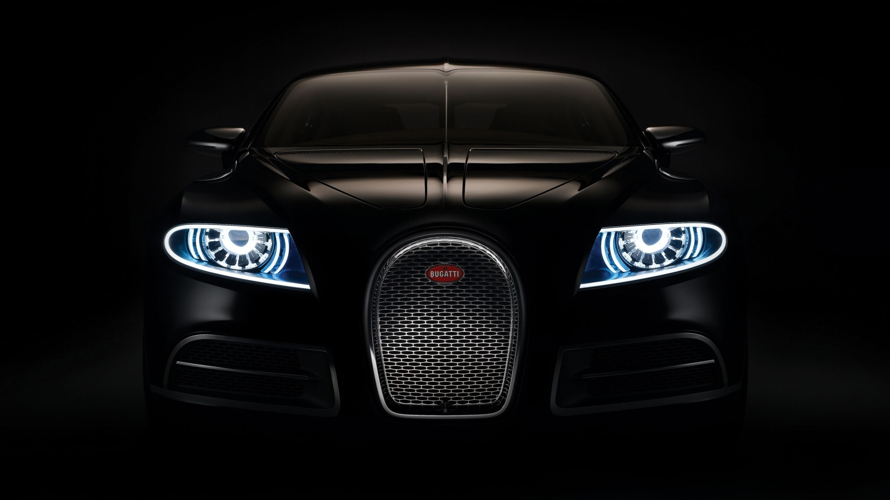
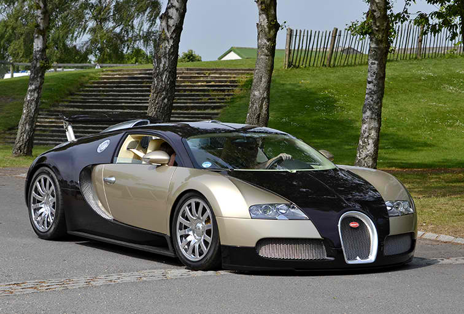
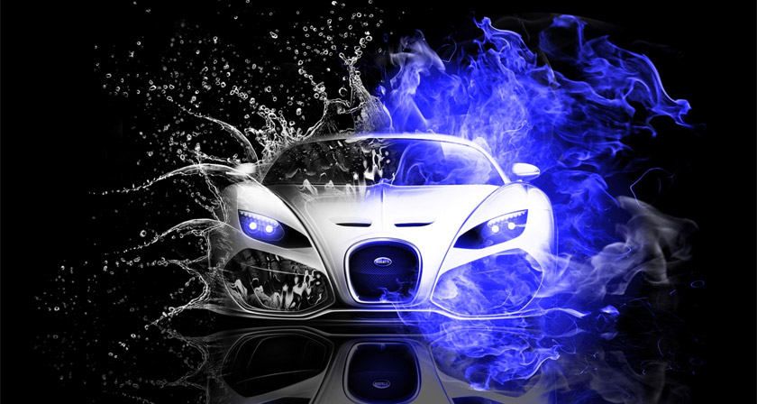

The Chiron is an iconic vehicle, the supercar that catapulted BUGATTI into the modern landscape of Automotive. It set the benchmark exceedingly high, pushing the brand further and further beyond expectations. Such an extraordinary vehicle deserves accessories that match its pioneering spirit and exquisite design and technology.
41.96 seconds for acceleration from a standstill to 400km/hr and braking to a standstill The fastest time ever reached and officially measured for this driving manoeuvre for a production vehicle throughout the world Bugatti confirms the exceptional position of the Chiron in terms of acceleration and braking and its leading role in the extreme performance range
NEWS & STORIES

With Veyron and Chiron, Bugatti wowed the world with these hypercars, pushing the boundaries of speed and performance.
The Schlumpf Collection preserved rare and historic Bugatti models.

This Chiron is the most expensive car in the world with an estimated price tag of $185 million. It was designed by the
Chiron is the creation of legendary designerbugati car designer O.K. Bugatti.

This car was built by Legend in collaboration with Pininfarina for Bugatti.
More Information and reviews of the Bugatti Chiron